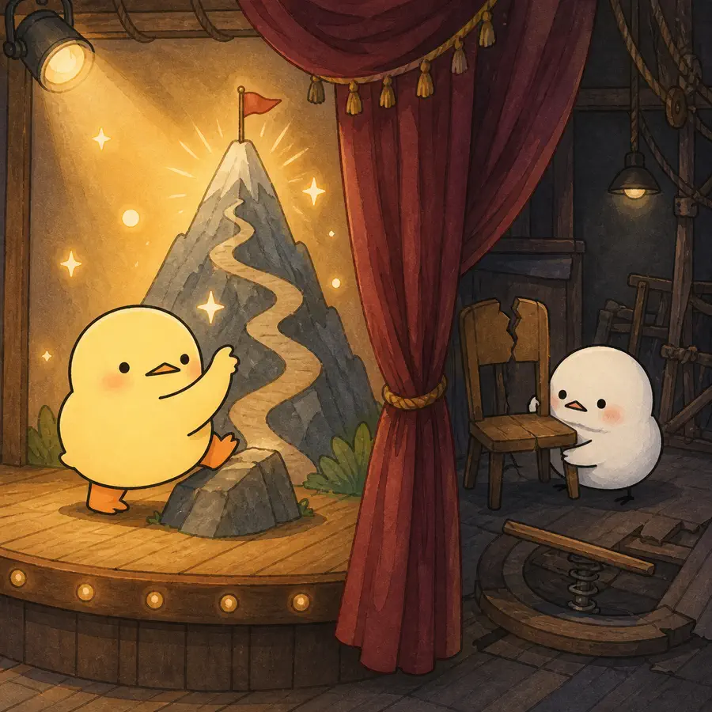
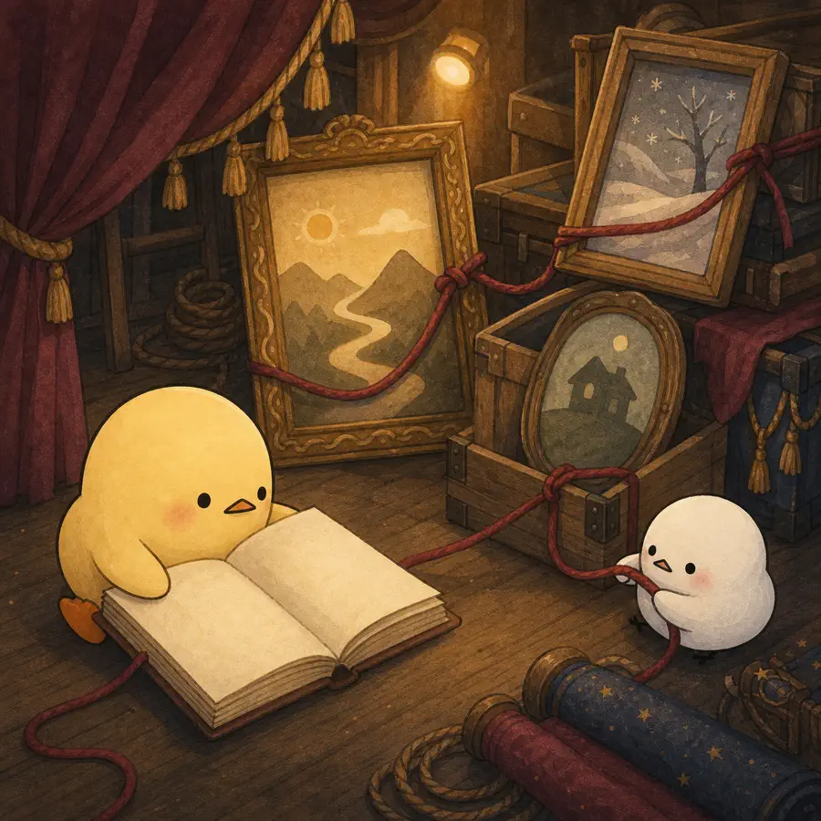
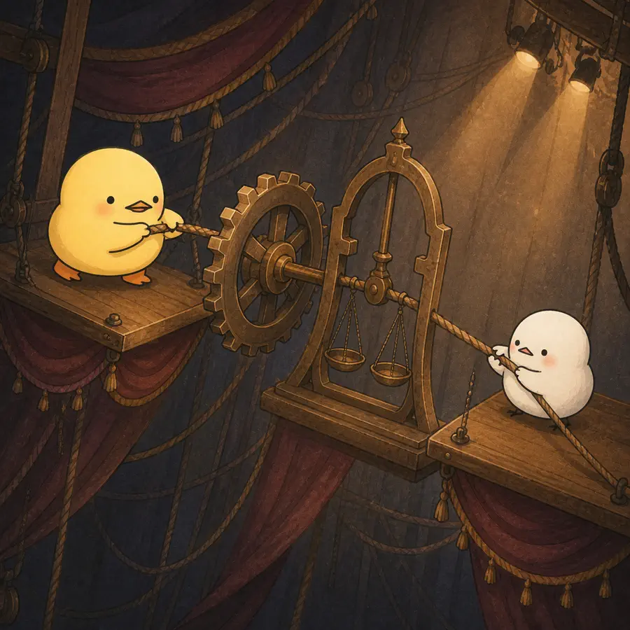
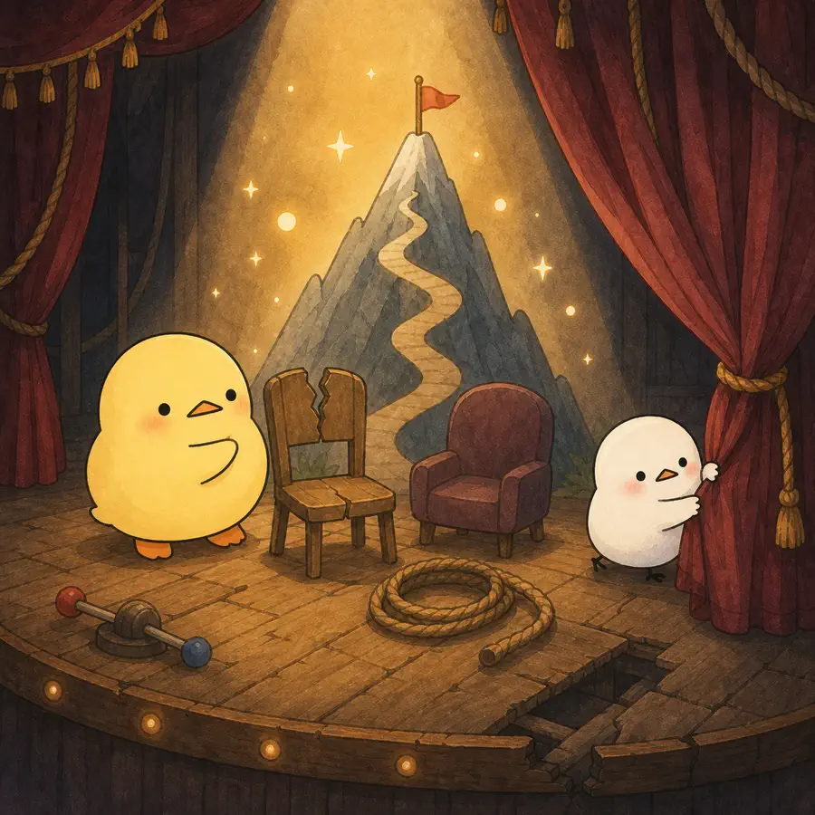

ILLUSTRATED OVERVIEW
4컷으로 읽는 관계 속의 노화
개인의 노화가 타인의 시선, 관계, 역사, 법과 환경 속에서 어떻게 만들어지는지 무대 안팎을 오가며 봅니다.
옆으로 넘겨 4컷 보기
-

활동적 노년의 공적 담론과 취약성의 사적 고백을 갈라놓으면 타자화가 반복된다.
-

자아와 생애사는 사회적 거울과 공동전기작가의 관계 속에서 유지된다.
-

상호의존은 지지와 연속성을 주면서 위험과 불확실성도 관계를 통해 전달한다.
-

활동·독립만 정상으로 두고 취약성을 실패나 ‘그들’의 문제로 밀어내지 말아야 한다.